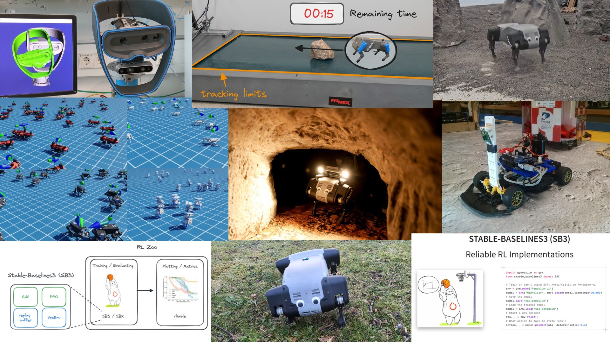
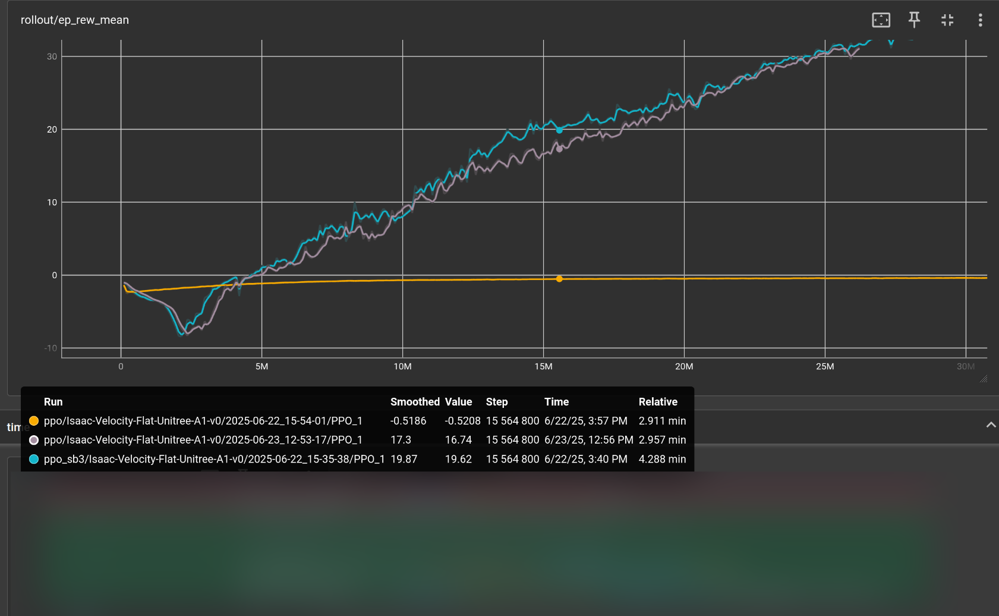
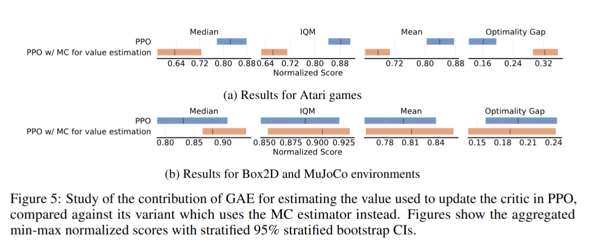
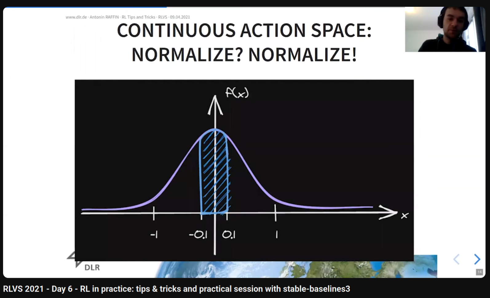

Making RL Work
Out-of-the-Box
(WIP)

Outline
- RL is hard
- $N$ implementation details of $Y$ (where $N >> 1$)
- Reducing algorithm and environment complexity
- Case study: SAC in IsaacSim (env design + HPO)
RL is Hard (Episode #5623)


There is only one line of code that is different.
RL is Hard (Episode #4352)

Which algorithm is better?
The only difference: the epsilon value to avoid division by zero in the optimizer
(one is eps=1e-7
the other eps=1e-5)
Stable-Baselines3 (SB3)

https://github.com/DLR-RM/stable-baselines3
Raffin, Antonin, et al. "Stable-baselines3: Reliable reinforcement learning implementations." JMLR (2021)
Reliable Implementations?

- Performance checked
- Software best practices (96% code coverage, type checked, ...)
- Active community (13k+ stars, 5000+ citations, 20M+ downloads)
- Fully documented
Reproducible Reliable RL: SB3 + RL Zoo

RL from scratch in 10 minutes
Using SB3 + Jax = SBX: https://github.com/araffin/sbx
- RL is hard
- $N$ implementation details of $Y$ (where $N >> 1$)
- Reducing algorithm and environment complexity
- Case study: SAC in IsaacSim (env design + HPO)
The 37 Implementation Details of PPO

https://iclr-blog-track.github.io/2022/03/25/ppo-implementation-details/
DQN: Hidden Details in the Appendix


Open RL Benchmark
- Large scale, multi library (SB3, CleanRL, torchRL, ...)
- Comprehensive tracked metrics, saved hyperparameters
- Reproducible experiments
- Easy access and visualization (cli)

Huang, Shengyi, et al. "Open RL Benchmark: Comprehensive Tracked Experiments for RL." (2024).
Open RL Benchmark Study

- RL is hard
- $N$ implementation details of $Y$ (where $N >> 1$)
- Reducing algorithm and environment complexity
- Case study: SAC in IsaacSim (env design + HPO)
An Open-Loop Baseline for RL Locomotion Tasks
Periodic Policy

Raffin et al. "An Open-Loop Baseline for Reinforcement Learning Locomotion Tasks", RLJ 2024.
Outstanding Paper Award on Empirical Resourcefulness in RL
Cost of generality vs prior knowledge
Learning from human feedback
Raffin, Antonin "Enabling Reinforcement Learning on Real Robots." Diss. TUM, 2024.
Adapting quickly: Retrained from Space
- RL is hard
- $N$ implementation details of $Y$ (where $N >> 1$)
- Reducing algorithm and environment complexity
- Case study: SAC in IsaacSim (env design + HPO)
Making SAC work on Massive Parallel Sim
Out of the box
Action Space and Action Dist


Optimizing for speed


Conclusion
- Software engineering for reliable implementations
- Experiments database (OpenRL Benchmark)
- Reducing complexity
- Automatic hyperparameter tuning
Questions?
Backup Slides
Truncations for infinite horizon tasks
truncation vs termination


Example
Timeout: max_episode_steps=4
-
Without truncation handling:
$V_\pi(s_0) = \mathop{\sum^{\textcolor{a61e4d}{3}}_{t=0}}[\gamma^t r_t] = 1 + 1 \cdot 0.98 + 0.98^2 + 0.98^3 \approx 3.9 $ -
With truncation handling:
$V_\pi(s_0) = \mathop{\sum^{\textcolor{green}{\infty}}_{t=0}}[\gamma^t r_t] = \sum^{\textcolor{green}{\infty}}_{t=0}[\gamma^t] = \frac{1}{1 - \gamma} \approx 50 $
Recall: DQN Update
- DQN loss:
\[\begin{aligned} \mathcal{L} = \mathop{\mathbb{E}}[(\textcolor{#a61e4d}{y_t} - \textcolor{#1864ab}{Q_\theta(s_t, a_t)} )^2] \end{aligned} \]
- Regression $ \textcolor{#1864ab}{f_\theta(x)} = \textcolor{#a61e4d}{y}$
with input $\textcolor{#1864ab}{x}$ and target $\textcolor{#a61e4d}{y}$:
- input: $\textcolor{#1864ab}{x = (s_t, a_t)}$
- if $s_{t+1}$ is non terminal: $y = r_t + \gamma \cdot \max_{a' \in A}(Q_\theta(s_{t+1}, a'))$
- if $s_{t+1}$ is terminal: $\textcolor{a61e4d}{y = r_t}$
- if $s_{t+1}$ is truncation: $y = r_t + \gamma \cdot \max_{a' \in A}(Q_\theta(s_{t+1}, a'))$
In Practice